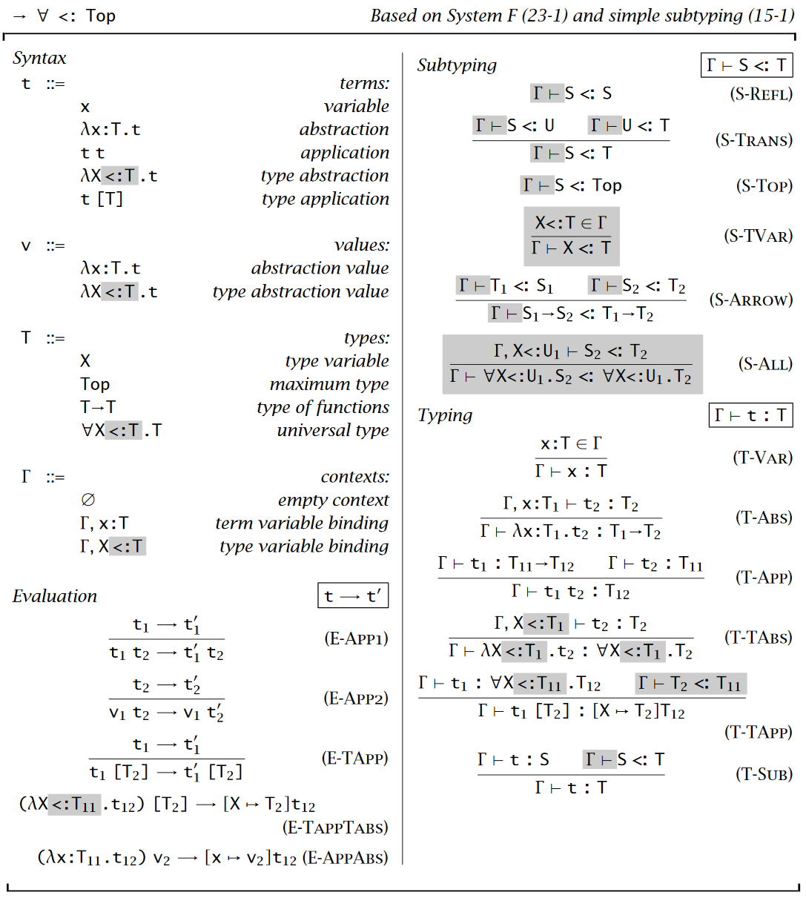
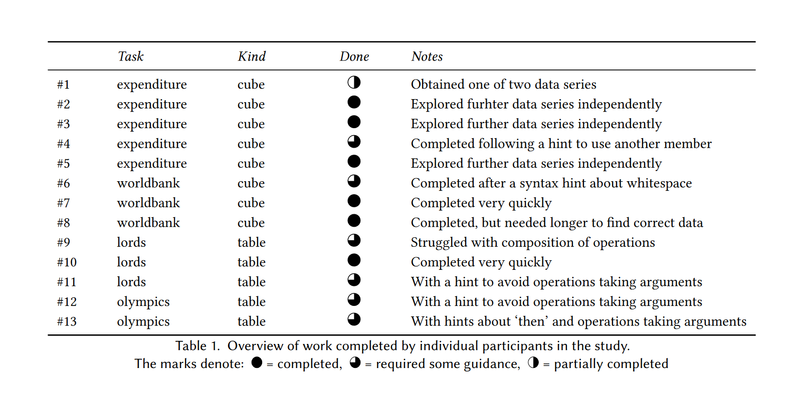
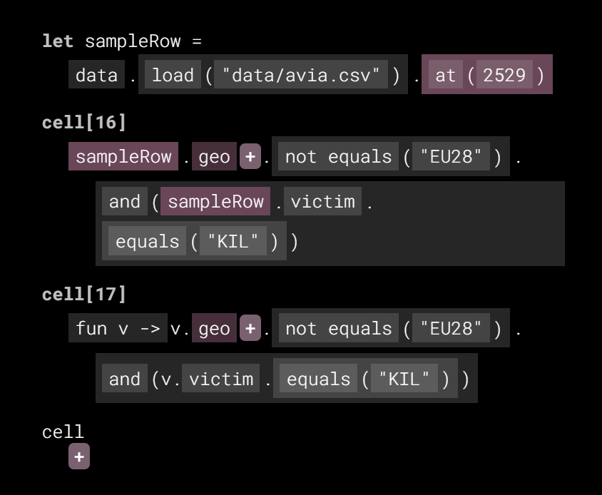

Programming systems
Deserve a theory too!
Tomas Petricek, Charles University
tomas@tomasp.net
https://tomasp.net
@tomaspetricek
Introduction
Programming systems

Programming Languages
Programming is
writing code
Formal semantics, implementation, paradigms, types
We know how
to study this!

Programming Systems
Interacting with a stateful system
Feedback, liveness, interactive user interfaces
But how do we
study this?
Paradigm shift in 1990s

Scientific paradigm shifts
- The past is a foreign country
- Paradigms are incommensurable
- Old notions stop making any sense
From systems to languages
- From CLOS and Flavors to mixins
- From running system to code
- From state & interaction to semantics
Iterative prompting
Programming for data science

Journalism
Tooling gap between Excel and Python
Data querying, aggregation and visualization
Very hard with
current tools!
DEMO
Data exploration in The Gamma
The Gamma
What makes it interesting?
- Syntax is just member access
- Program using just auto-completion!
- Recognition over recall principle
- Makes correct and complete suggestions

The Gamma
What can we claim
using HCI methods?
Non-experts can use this to explore data
"This is actually pretty simple to use."
Data wrangling
Cleaning messy data takes 80% of time!
Match data, identify types and semantics, fill missing values, remove outliers
Automatic tools work some 95% of time...
DEMO
AI assistants in Wrattler
Iterative prompting
Programming system pattern
- Powerful programming interaction principle
- Data exploration, cleaning and more
- Perfect middle ground between code & UIs?
- Two-layer conceptual structure
Complementary science
Learning from past systems
DEMO
How Tomas learned programming
Learning from past systems

What's cool about 90s web?
- Source code available & accessible
- Easily extractable & copyable snippets
- Poor engineering in a poor language!
Complementary science
- Do (serious) history to recover ideas
- Lost due paradigm shifts in science
- Even more powerful for computing!
Good old systems
What have we forgotten about?
- Pygmalion - program by direct manipulation
- HyperCard - usability, levels, editing = running
- Boxer - program as fully transparent document
- Interlisp - code = data, modifiable live via code!
DEMO
Recovering Commodore 64 BASIC
Commodore 64
What makes this interesting?
- Editing and running as one mode of interaction
- Load code even to run a game!
- Learning by copying code from magazines
- High convenience with escape hatches (POKE)
How to look at programming systems?
They are interactive
- Hard to see interaction "on paper"
- Screencast, interactive essay
- What makes for a rigorous demo?
What to say about them
- Here is a cool new system!
- Essential characteristics?
- Compare, improve & stand on the shoulders of giants
Technical dimensions
Qualitative systems analysis
Technical dimensions

What is a dimension
- Capture interesting properties
- Cover old and new systems
- Allow qualitative comparison
Example dimensions
- Modes of interaction
- Uniformity, conceptual structure
- Learnability & sociability

Technical dimensions catalogue
Analysis of:
LISP machines, UNIX, Web, Hypercard, Spreadsheets, Haskell, Boxer, Dark, etc.
How to use dimensions

Analysis tool
- What makes system interesting?
- Compare against existing
- Does not say what's good!
Design space mapping
- Discover design opportunities
- Are there blank areas?
- Graphical self-sustainable systems!
Conclusions
Programming systems deserve a theory too!

- Shift from systems to languages
- Interesting old and new systems
- Technical dimensions as step one
Tomas Petricek, Charles University
tomas@tomasp.net
https://tomasp.net
@tomaspetricek
References & Demos
- Technical dimensions of programming systems
- The Gamma: Tools for open data-driven storytelling
- The Gamma: Democratizing data science
- Histogram: You have to know the past to understand the present
- The Lost Ways of Programming: Commodore 64 BASIC
- J. Jakubovic, J. Edwards, T. Petricek (2023). Technical dimensions of programming systems. Programming Journal
- J. Jakubovic, T. Petricek (2022) Ascending the Ladder to Self-Sustainability Onward!
- T. Petricek (2022) The Gamma Programmatic Data Exploration for Non-programmers. VL/HCC
- T. Petricek, J. Geddes, & C. Sutton (2018). Wrattler: Reproducible, live and polyglot notebooks. TaPP